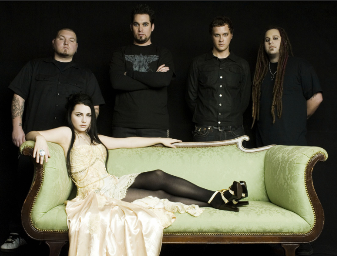

This is my practice program.
I am doing this program for the book 'A Smarter Way to Learn HTML and CSS.'
Warning: We have no slow lorises here.
This heading is in typewriter text.
This paragraph is also in typewriter text.
Beware
Some people think that books are dangerous. Those people do not understand.
It's not the books that are dangerous, it's the ideas inside of them.
Evanescence

Evanescence is an American rock band founded in 1995 in Little Rock, by
Arkansas by singer and musician Amy Lee and guitarist Ben Moody. After recording independent
EPs as a duo in the late 90s, and a demo CD, Evanescence released their debut studio album, Fallen,
on Wind-up Records in 2003. Propelled by the success of hit singles like "Bring Me to Life" and
"My Immortal", Fallen sold more than four million copies in the US by January 2004, garnering the
band two Grammy Awards out of six nominations. The band released their first live album and concert
DVD, Anywhere but Home, in 2004, which sold over one million copies worldwide.
This heading is enclosed in a blue ridge border.
This heading is enclosed in a green groove border.
This heading has a red inset border.
This heading has a yellow outset border.
WAY TOO MANY BORDERS!!!
Fonts
Both the heading above and this paragraph text are in one of my favourite fonts,
Copperplate Gothic. I often use this font on book covers or in situations where I want the text
to look strong and have a slightly darker feeling.
This heading does not need to be here.

